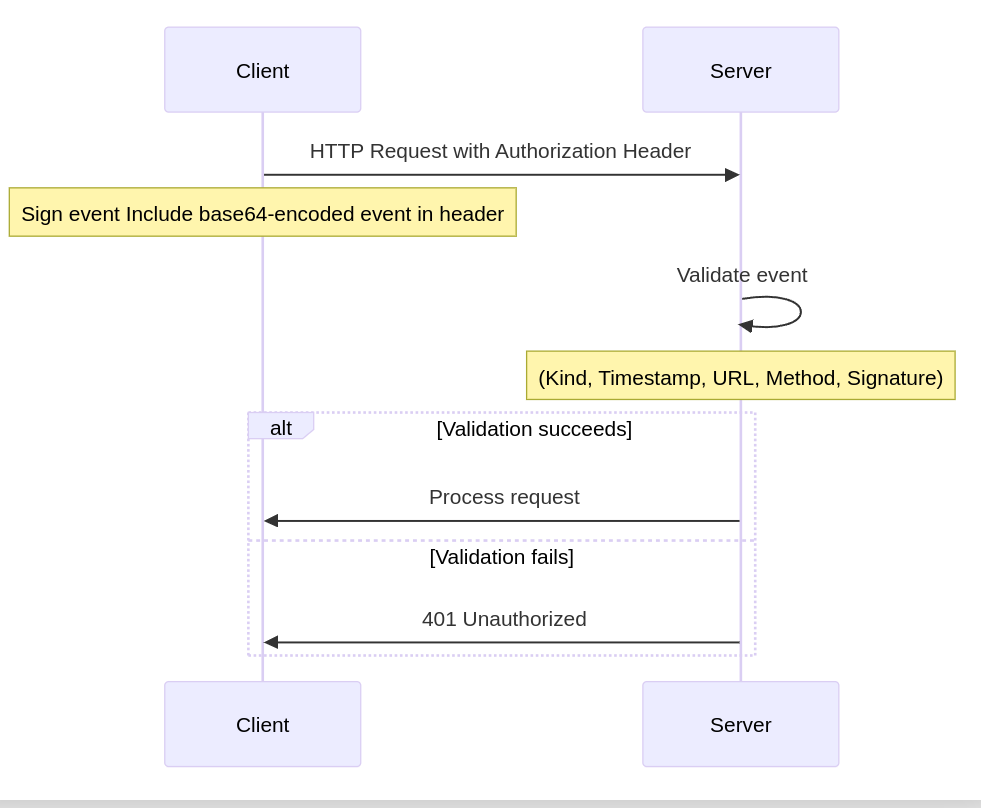

This specification defines a method for authenticating HTTP requests using Schnorr signatures, providing a decentralized and secure authentication mechanism. By leveraging Schnorr signatures, widely used in Bitcoin Taproot and the Nostr protocol, this method enables seamless integration with decentralized networks and services.
This is a draft document of the W3C Nostr Community Group and may be updated, replaced, or obsoleted by other documents at any time. It is inappropriate to cite this document as other than work in progress.
This document was produced by a group operating under the W3C Community Contributor License Agreement (CLA).
The key words "MUST", "MUST NOT", "REQUIRED", "SHALL", "SHALL NOT", "SHOULD", "SHOULD NOT", "RECOMMENDED", "NOT RECOMMENDED", "MAY", and "OPTIONAL" in this document are to be interpreted as described in BCP 14 [[RFC2119]] [[RFC8174]] when, and only when, they appear in all capitals, as shown here.
The rise of decentralized applications and services necessitates secure and user-centric authentication mechanisms. Traditional centralized authentication methods often introduce single points of failure and privacy concerns. By utilizing Schnorr signatures for HTTP authentication, we can achieve a decentralized, secure, and privacy-preserving authentication protocol suitable for modern web applications.
Schnorr signatures are digital signature schemes known for their simplicity, efficiency, and provable security. They are extensively used in blockchain technologies such as Bitcoin and Litecoin. Their non-malleability and linearity properties make them ideal for complex cryptographic protocols.
This specification builds upon the concepts introduced in RFC 7235 (HTTP/1.1 Authentication) and extends the authentication framework to support Schnorr signatures. It also aligns with efforts in decentralized networks like Nostr and projects like Solid that explore signature-based authentication.
Enable users to authenticate across multiple services using a single cryptographic identity, eliminating the need for passwords and reducing friction in the user experience.
Facilitate authentication in decentralized applications where traditional centralized authentication methods are not viable, enhancing security and user control over personal data.
Leverage existing cryptographic keys from blockchain networks like Bitcoin, allowing users to authenticate with services using the same keys that control their digital assets.
The authentication protocol utilizes a signed JSON event included in the
HTTP
Authorization header. The event contains necessary
information for the server to validate the request, including the
request URL, HTTP method, and a timestamp.

The event is a JSON object with the following fields. The complete JSON structure is defined in the ABNF grammar section, and individual field formats are specified in the Event Field Formats.
id: The hash of the serialized event.pubkey: The public key of the client in hexadecimal
format.
content: SHOULD be an empty string.kind: An integer value of 27235, referencing
RFC 7235.
created_at: A UNIX timestamp indicating when the event
was created.
tags: An array of tags providing additional information.
["u", "<absolute-URL>"]: The absolute URL of
the request.
["method", "<HTTP-method>"]: The HTTP method
used for the request.
["payload", "<sha256-hex>"] (optional): SHA-256
hash of the request body for methods like POST, PUT, PATCH.
["webid", "<webid>"] (optional): The WebID of the client, allowing the event to carry user identification via WebID.
sig: The Schnorr signature of the serialized event.
Events MUST be serialized according to the canonical JSON format specified in [[NIP01]]. The serialization process is as follows:
0 (integer, always zero)pubkey (string, lowercase hexadecimal)created_at (integer, UNIX timestamp)kind (integer, must be 27235)tags (array of arrays, sorted lexicographically)content (string, should be empty)
The id field MUST be calculated as follows:
The sig field MUST be created as follows:
Authorization header with the scheme
Nostr.
401 Unauthorized.
This section provides formal syntax definitions using Augmented Backus-Naur Form (ABNF) as specified in [[RFC5234]]. These grammar rules define the precise format requirements for all protocol elements.
nostr-auth = "Authorization:" OWS "Nostr" 1*SP b64token OWS
b64token = 1*( ALPHA / DIGIT / "+" / "/" ) *2"="
event-id = 64HEXDIG
public-key = 64HEXDIG
signature = 128HEXDIG
unix-timestamp = 1*DIGIT
kind-value = "27235"
content-field = ""
url-tag = "[" DQUOTE "u" DQUOTE "," OWS DQUOTE absolute-URI DQUOTE "]"
method-tag = "[" DQUOTE "method" DQUOTE "," OWS DQUOTE http-method DQUOTE "]"
payload-tag = "[" DQUOTE "payload" DQUOTE "," OWS DQUOTE 64HEXDIG DQUOTE "]"
webid-tag = "[" DQUOTE "webid" DQUOTE "," OWS DQUOTE absolute-URI DQUOTE "]"
http-method = "GET" / "POST" / "PUT" / "DELETE" / "PATCH" / "HEAD" / "OPTIONS"
absolute-URI = scheme ":" hier-part [ "?" query ] [ "#" fragment ]
scheme = ALPHA *( ALPHA / DIGIT / "+" / "-" / "." )
hier-part = "//" authority path-absolute / path-absolute / path-rootless / path-empty
authority = [ userinfo "@" ] host [ ":" port ]
path-absolute = "/" [ segment-nz *( "/" segment ) ]
query = *( pchar / "/" / "?" )
fragment = *( pchar / "/" / "?" )
HEXDIG = DIGIT / "A" / "B" / "C" / "D" / "E" / "F" / "a" / "b" / "c" / "d" / "e" / "f"
64HEXDIG = 64HEXDIG-rule
64HEXDIG-rule = HEXDIG HEXDIG HEXDIG HEXDIG HEXDIG HEXDIG HEXDIG HEXDIG
HEXDIG HEXDIG HEXDIG HEXDIG HEXDIG HEXDIG HEXDIG HEXDIG
HEXDIG HEXDIG HEXDIG HEXDIG HEXDIG HEXDIG HEXDIG HEXDIG
HEXDIG HEXDIG HEXDIG HEXDIG HEXDIG HEXDIG HEXDIG HEXDIG
HEXDIG HEXDIG HEXDIG HEXDIG HEXDIG HEXDIG HEXDIG HEXDIG
HEXDIG HEXDIG HEXDIG HEXDIG HEXDIG HEXDIG HEXDIG HEXDIG
HEXDIG HEXDIG HEXDIG HEXDIG HEXDIG HEXDIG HEXDIG HEXDIG
HEXDIG HEXDIG HEXDIG HEXDIG HEXDIG HEXDIG HEXDIG HEXDIG
128HEXDIG = 128HEXDIG-rule
128HEXDIG-rule = 64HEXDIG-rule 64HEXDIG-rule
; Core ABNF rules from RFC 5234
ALPHA = %x41-5A / %x61-7A ; A-Z / a-z
DIGIT = %x30-39 ; 0-9
DQUOTE = %x22 ; " (Double Quote)
SP = %x20 ; space
OWS = *( SP / HTAB ) ; optional whitespace
HTAB = %x09 ; horizontal tab
event-object = "{"
DQUOTE "id" DQUOTE ":" DQUOTE event-id DQUOTE ","
DQUOTE "pubkey" DQUOTE ":" DQUOTE public-key DQUOTE ","
DQUOTE "created_at" DQUOTE ":" unix-timestamp ","
DQUOTE "kind" DQUOTE ":" kind-value ","
DQUOTE "tags" DQUOTE ":" tags-array ","
DQUOTE "content" DQUOTE ":" DQUOTE content-field DQUOTE ","
DQUOTE "sig" DQUOTE ":" DQUOTE signature DQUOTE
"}"
tags-array = "[" [ tag-element *( "," tag-element ) ] "]"
tag-element = url-tag / method-tag / payload-tag / webid-tag
Servers MUST perform the following checks to validate the event:
kind field MUST be
27235.
created_at timestamp MUST be within a reasonable time
window (e.g., ±60 seconds of the server's current time).
["u", "<absolute-URL>"] tag MUST exactly match the
absolute request URL, including query parameters.
["method", "<HTTP-method>"] tag MUST match the HTTP
method used for the request.
sig field
MUST be a valid secp256k1 Schnorr signature as specified in [[BIP340]],
verifiable using the pubkey and the event ID calculated
according to the Event ID Calculation section.
["payload", "<sha256-hex>"] tag, the SHA-256 hash
of the request body MUST match the provided hash.
["webid", "<identity-uri>"] tag, the server MAY perform
identity-based validation as specified in the
Identity Integration section.
If any of these checks fail, the server SHOULD respond with
401 Unauthorized.
Servers MAY perform additional implementation-specific validation checks, such as rate limiting or public key blacklisting.
This specification supports integration with decentralized identity systems to enable automatic public key discovery and identity verification through WebID profiles and DID:nostr identifiers.
WebID profiles MUST link to secp256k1 public keys to enable automatic key discovery. The profile SHOULD include the public key using the following RDF vocabulary:
@prefix cert: <http://www.w3.org/ns/auth/cert#> .
@prefix nostr: <https://w3id.org/nostr/vocab#> .
@prefix foaf: <http://xmlns.com/foaf/0.1/> .
<https://alice.example/profile#me> a foaf:Person ;
nostr:pubkey "63fe6318dc58583cfe16810f86dd09e18bfd76aabc24a0081ce2856f330504ed" ;
cert:key [
a cert:PublicKey ;
nostr:pubkey "63fe6318dc58583cfe16810f86dd09e18bfd76aabc24a0081ce2856f330504ed" ;
cert:exponent 65537 ;
cert:modulus "abc123..."^^xsd:hexBinary
] .
This specification aligns with the DID:nostr method as specified in [[DID-NOSTR]]. DID:nostr identifiers encode the public key directly and provide a standardized resolution mechanism:
did:nostr:npub1v0lxx8xtp4vzlet3sgm3xmgne8x0majkys9qpq7v2pt0xvcq2nx4svlx5kj
The public key can be extracted from the DID identifier using the bech32 decoding process specified in the DID:nostr method.
When a webid tag is present in the authentication event,
servers MAY perform identity-based validation:
["webid", "<identity-uri>"] taghttps:// URIs: Fetch WebID profile and parse RDFdid:nostr: URIs: Extract public key from DID identifierpubkey field in the eventWhen performing WebID-based validation, servers SHOULD implement the following requirements:
pubkey field in the authentication event
Authorization header.
Special thanks to the members of the W3C Nostr Community Group and the broader community for their valuable feedback and contributions.